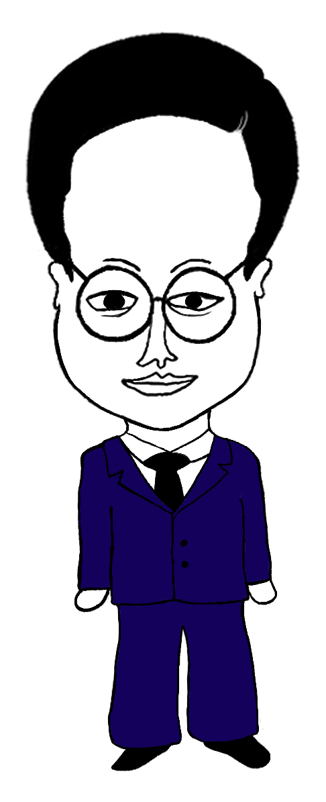
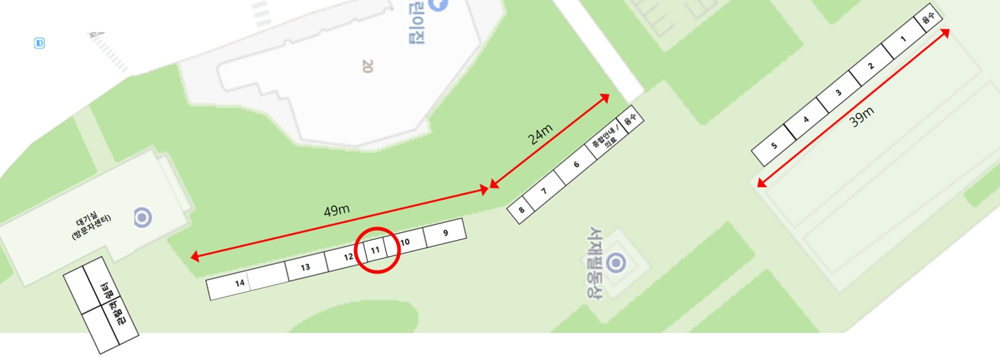

STORY
사라진 독립투사를 찾아라
서대문독립공원을 지나던 당신에게 의문의 상자가 전달되었다.
그 안에는 긴급한 메시지.
"독립군의 비밀 자금을 아는 단 한 사람이 사라졌습니다.
공원 곳곳에 흩어진 조각을 모아 60분 안에 그를 찾아주십시오!"
서대문독립공원을 지나던 당신에게 의문의 상자가 전달되었다.
그 안에는 긴급한 메시지.
"독립군의 비밀 자금을 아는 단 한 사람이 사라졌습니다.
공원 곳곳에 흩어진 조각을 모아 60분 안에 그를 찾아주십시오!"

서대문독립공원을 지나던 중 의문의 상자를
전달받았다. 4인 조력자의 힌트를 따라
60분 안에 '사라진 독립투사'가 남긴
비밀 단서를 추적한다.
비밀 군자금의 위치를 아는 유일한 인물.
일제 순사의 추격을 피하던 중 흩어진
힌트 조각만을 공원에 남긴 채 감쪽같이
자취를 감추었다.
'서대문 독립민주축제 체험 부스 11번'에서 참가신청(현장 접수)
서대문독립공원의 실제 구조물을 활용하여 흩어진 8개의 조각을 찾습니다.
스토리의 주인공이 되어 60분 제한시간 내에 현장 퀴즈를 풀고 미션을 완료합니다.
성공적으로 미션을 완료하고, '서대문 독립민주축제 체험 부스 11번'에서 기념 굿즈 5종을 수령합니다.
2026년 8월 15일(토) / 16일(일)
10시 ~ 17시
※ 굿즈 수령은 참여 당일 17:00 마감!
서대문 독립민주축제 체험 부스 11번 (독립공원 일대)
약 60분 · 자유 탐색형 야외 추리 게임
참가비 2만원
'굿즈 5종 세트' 증정
📢 필독 안내사항

지하철 3호선 독립문역 4번 출구
서대문 독립민주축제 체험 부스 11번
서대문독립공원 일대에서 진행됩니다. 대중교통 이용을 권장합니다.
체험 부스 배치도 · 11번 부스에서 접수